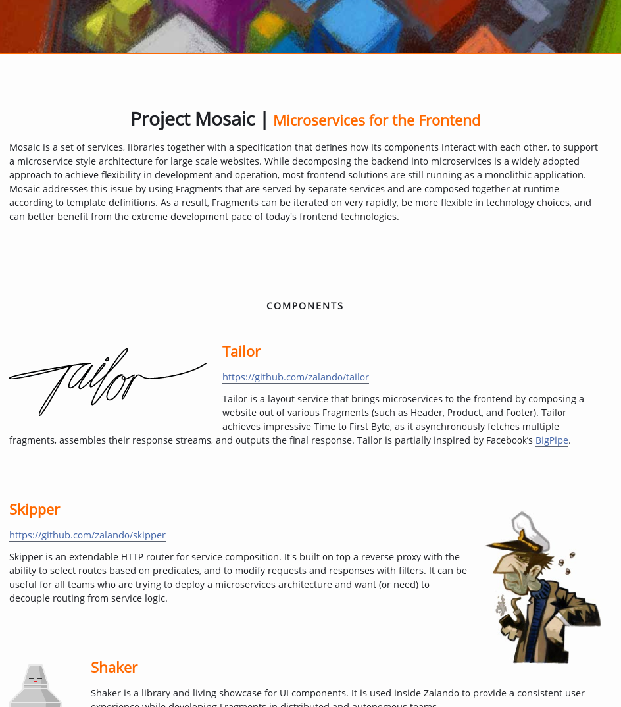

The Frontend Monolith
Versprechen Microservices
- unabhängige Weiterentwicklung
- unabhängiges Deployment
- Skalierbarkeit
- Entkopplung der Teams
Aufwand / Kosten
- Code Doppelung
- Daten Doppelung
- Administration
- Automatisierung
Self Contained Systems
- 'große Mircoservices'?
- Abhängigkeiten zwischen Services minimieren
Conway's Law
Beispiel Retail Site
.. und sie lebten glücklich bis an ihr Lebensende?

Aufwand / Kosten
- + Organisation
- + Koordination
Optionen der Integration
- Was integrieren wir? (Code / Daten)
- Wo integrieren wir? (Frontend / Backend)
Integration per Daten
- Team bis 'Oberkante API'
- UI vom verwendenden Team gebaut
Integration per Code
- Team stellt Code für UI
- Kopplung zwischen Teams
Integration per Content
- 'Transclude'
- Frontend: CSI
- Backend: SSI / ESI
Integration im Backend

Integration im Frontend
- Link: "das magische Integrationskonzept" (Stefan Tilkov)
- iFrame
Integration im Frontend / CSI
- Javascript
hinclude
h-include
Dependencies
- CSS: im eingebetteten Fragment enthalten
- JavaScript: loader helper
Asset Server
- Bereitstellen der Assets für alle Komponenten
- Trade-Off
- eigenes Team
WebComponents / Custom Elements
class SearchBar extends HTMLElement {
...
}
customElements('search-bar', SearchBar);
...
Kommunikation
document.addEventListener('cartChanged', refresh);
...
document.dispatchEvent(new Event('cartChanged'));
Navigation
- multiple single page apps
Da war doch was?
- JSR-168
- JSR-162
- JSR-167
- JSR-286
- JSR-362
Mosaic 9

- Tailor
- Skipper
- Innkeeper
- Quilt
- Shaker